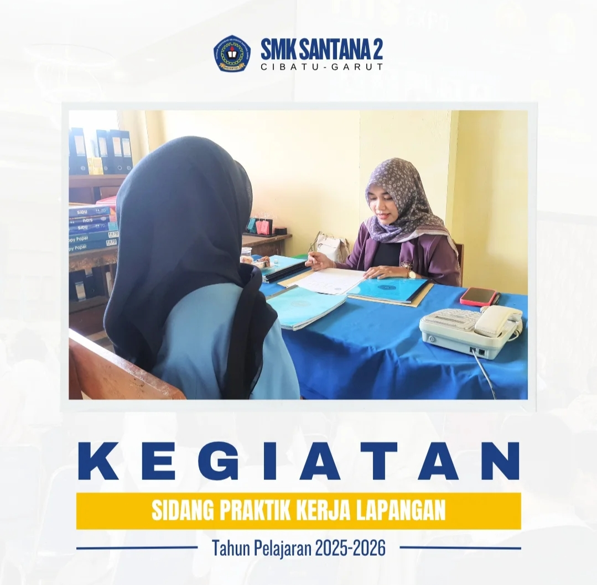
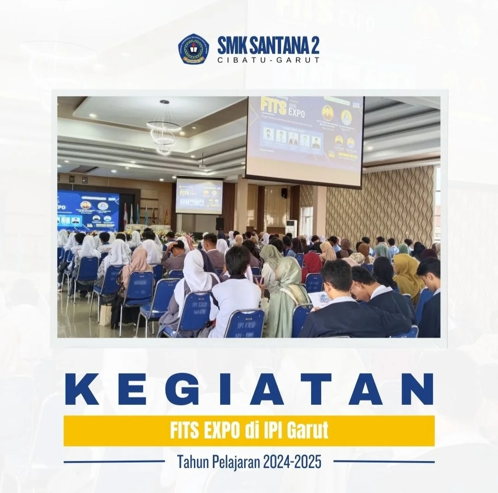
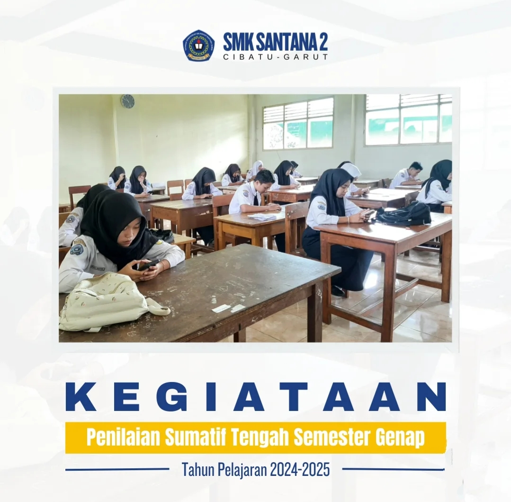
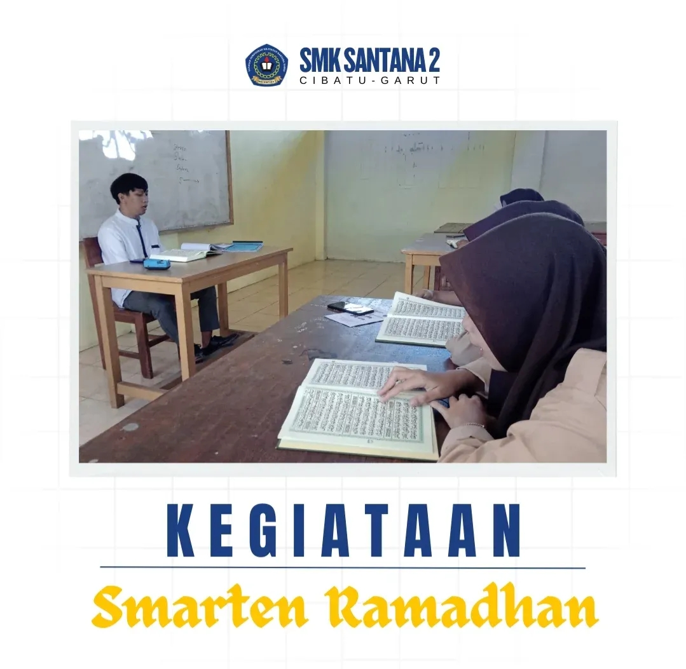
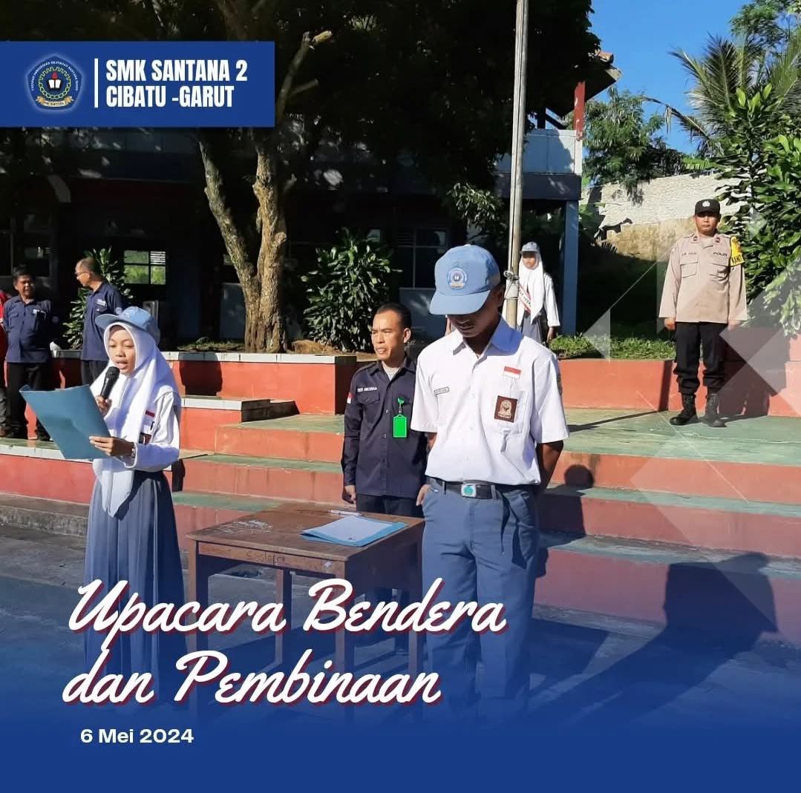
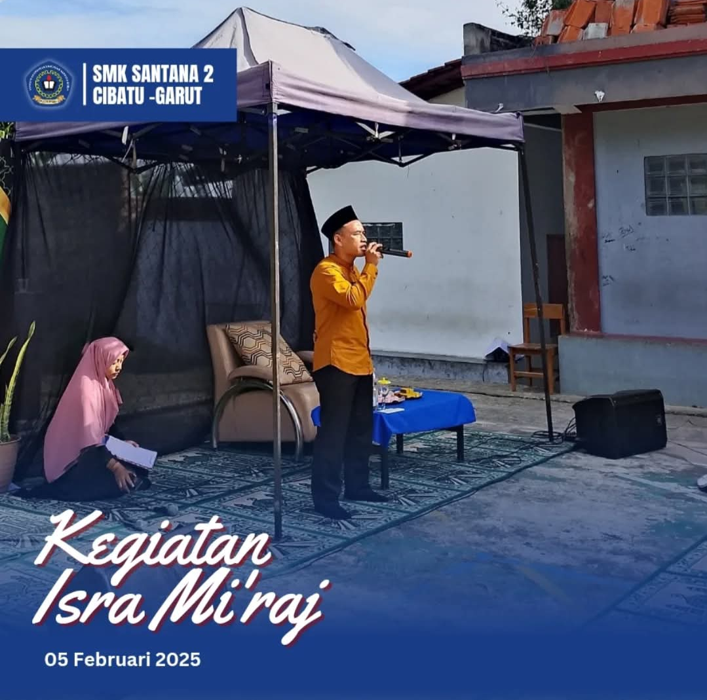

Kegiatan sesudah melaksanaan Praktik Kerja Lapangan.

Kunjungan ke berbagai kegiatan yang bermanfaat dan pastinya menambah wawasan.

Pelaksanaan penilaian siswa berbasis android dan dilakukan dengan sangat tekun.

kegiatan siswa di bulan suci ramadhan agar menumbuhkan keimanan, ketakwaan dan nilai religius.

Upacara bendera setiap hari senin di lapangan utama yang dilakukan dengan sangat disiplin dan khidmat.

Berkegiatan untuk memperingati hari besar keagamaan guna selalu menerapkan nilai religius dan meningkatkan keimanana dan ketakwaan.